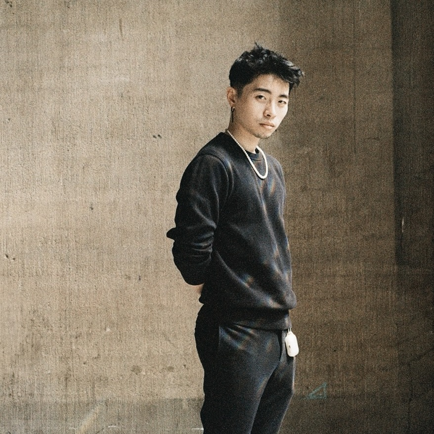

Biography

Khing (KhingWei Bai) is a Taiwanese artist from Taipei, currently based in Hamburg, Germany.
With a study background in architecture, Khing integrates spatial awareness and movement into his artistic practice, working primarily in photography and installation, which engage viewers in the dynamics of power in relation to diaspora, identity, and sexuality.
Education
-
From Oct. 2025
Master of Fine Art
-
From Oct. 2021 to July 2025
Bachelor of Fine Art
-
From Sep. 2010 to Jun 2016
Bachelor of Architecture
Exhibition
-
2025
Group ExhibitionAnd again how something and so on was or is
-
2025
Group ExhibitionStates of Rebirth/ Körperbilder in Bewegung
-
2024
Group ExhibitionDrifting between pictures of mind
-
2024
Group ExhibitionJakob Lena Knebl und Ashley Hans Scheirl - Passage
Awards & Scholarship
-
2024
Achievement Grant Awards